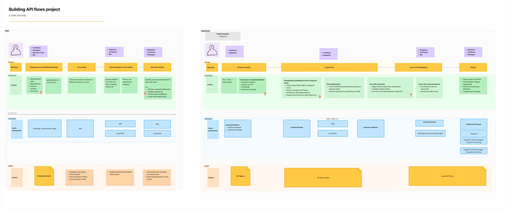
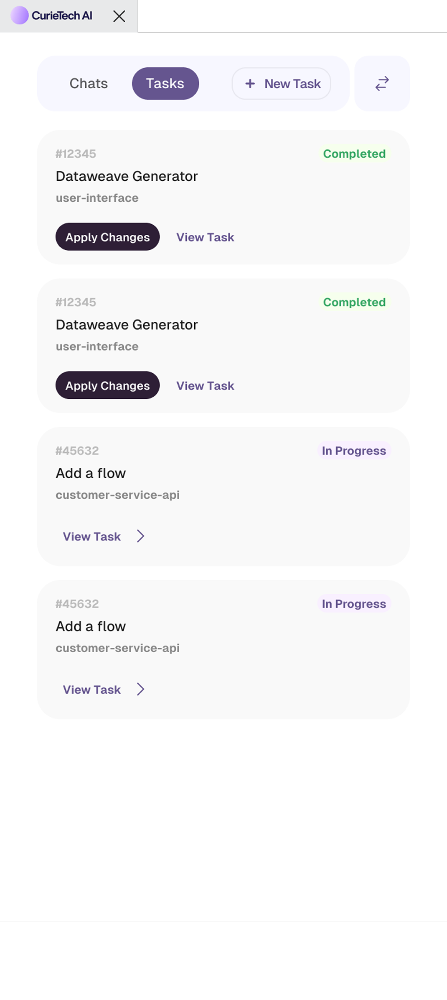
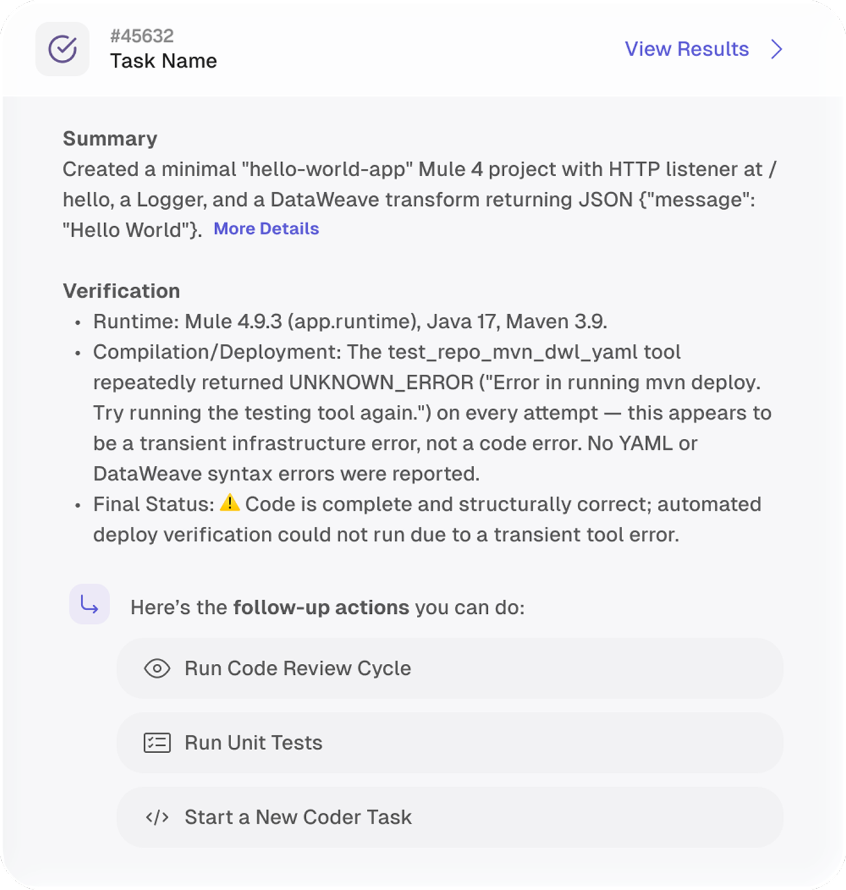
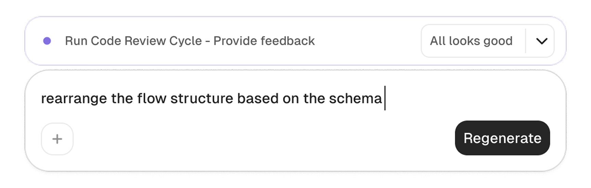
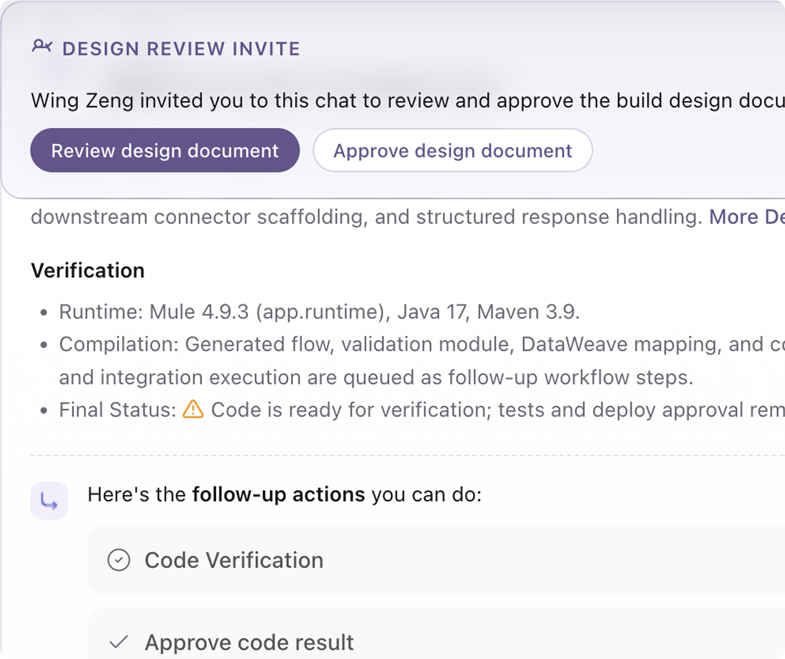

Guided Q&A
The agent asks one question at a time and walks the user from goal to generated flow.
Map the current workflows and user–AI systems, and build shared understanding with the team to find product direction.
Parallel prototyping in code, and align through variables that represent the tradeoffs.
Iterate from user behavior and model behavior.
Turn what we learn into a reusable system, so every project improves the next one.


The agent asks one question at a time and walks the user from goal to generated flow.
Selection groups appear inline in the chat flow, and the input box adapts to the question.
Describe the goal, connect the repo or files; the agent follows up and compiles a design spec for review.
The three variables the directions actually disagree on. Drag one — the demos above re-rank by how close each sits to your setting.
Anchor status and actions
Reduce density
Separate and simplify
Reduce visual weight

IDE review

Structured summary

Control bar

Shared review
Curie is a light, precise, engineering-focused product interface. The visual language is clean and restrained: pale surfaces, soft inset/onset shadows, crisp borders, compact controls, and a muted purple brand layer used sparingly for meaning and attention.
The overall mood should feel sleek, modern, calm, and operational. Surfaces are mostly neutral, interaction states are subtle, and hierarchy comes from typography, spacing, elevation, and controlled contrast rather than saturated color.
Curie screens should feel like focused workspaces: generous enough to breathe, dense enough for developer workflows, and visually quiet around the content. The strongest visual moments are reserved for primary actions, agent/chat entry points, status feedback, and selected states.
Always use semantic Tailwind token classes in production UI. Do not hardcode raw colors in new user-facing surfaces unless a token does not exist and the exception is documented.
#2e1f36): primary brand text and high-emphasis purple identity. Use via tokens-primary-1.#f9f0ff): pale purple wash for gentle brand backgrounds and selected areas. Use via tokens-primary-3.#262626): dark primary button background and high-emphasis neutral action. Use via tokens-neutral-bg-action.#2c8450), Warning Amber (#d48806), Error Red (#d94b36): status text and icons, always via tokens-status-*.#846fe1): link and interactive accent. Use via tokens-status-link-1.All application text should use the Typography component. Avoid raw headings, paragraphs, or spans for new Curie UI text unless wrapping third-party or markdown-rendered content.
Text should feel compact and precise. Use semibold for section headers and selected controls, medium for interactive labels, and bold only when the design needs explicit emphasis.
For settings-like surfaces, prefer titleLg with semibold for page titles. Avoid oversized bold headers on dense product screens because they overpower the workspace.
shadow-segment, then lift on hover.Microinteractions should be fast and subtle, usually 150ms to 300ms. Prefer opacity, transform, and shadow changes. Respect reduced-motion expectations for anything beyond basic state transitions.
Before creating any component, search the existing component and story directories. Storybook is the practical reference surface for component variants and expected behavior.
Primary buttons use Action Charcoal with white text, 12px corners, 36px height, and a subtle shadow. Hover and active states use white overlay fills rather than changing the base color abruptly. Destructive buttons are transparent with Error Text Red and an error-tinted hover state.
Standard segment controls use a soft grey track, 12px radius, and a white selected indicator. Sliding indicators should animate smoothly and stay visually aligned before paint.
Dropdown menus are for short action lists; popovers are non-blocking anchored panels. Do not call a rich picker a menu unless it is literally a list of actions. Use the shared dropdown primitives instead of hand-rolling positioning, clipping, hover, and keyboard behavior.
Every reusable component must have a Storybook story. Stories should include a playground with representative defaults, plus common variants and states, especially disabled, error, selected, loading, empty, and destructive states.
Storybook should be checked before creating a new primitive. If a component already exists, extend it with clear props rather than forking a near-duplicate.
Typography for application text.Prototype accents must translate to semantic Curie tokens in production:
#6b46e5) → Link Purple tokens-status-link-1.#10b981, emerald) → Success Green tokens. Do not ship raw emerald.